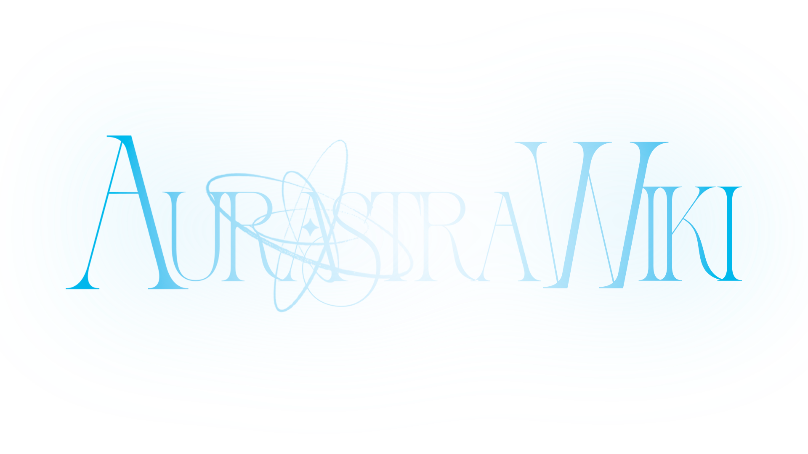

Boas-vindas à

A Wiki do Servidor de Minecraft Aurastra
0Páginas
0Edições
Sobre a Autrastra Wiki
A Aurastra Wiki é um projeto de enciclopédia colaborativa baseado no modelo wiki. Seu propósito é documentar e explicar a hisória de Aurastra, um universo ambientado no jogo Minecraft. Por ainda estar em fase inicial, o conteúdo da wiki pode sofrer diversas alterações ao longo do tempo.